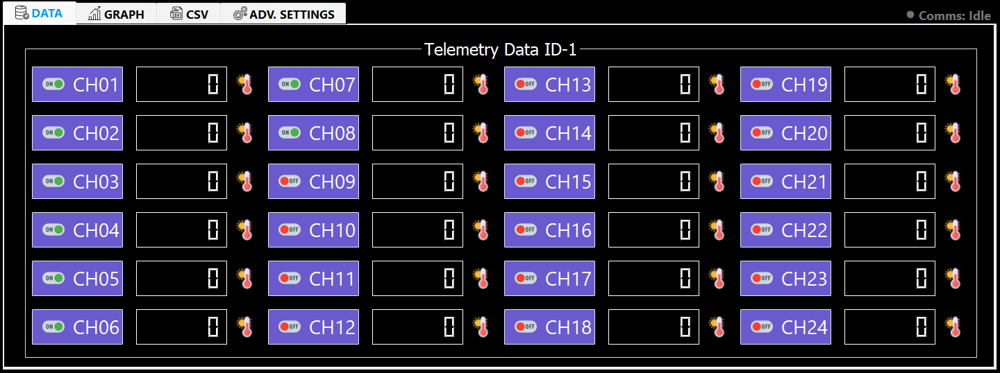

IntelliScan Software Manual
01Introduction & Overview
Sigma Controls IntelliScan is a professional windows based desktop application for industrial data logging using the RS-485 Modbus RTU protocol. It connects to up to 8 Modbus slave devices on a single RS-485 bus, each supplying up to 24 channels (CH01-CH24) of sensor data.
What the Software Does
Key Specifications
| Parameter | Value |
|---|---|
| Max Slaves | 8 (ID-1 through ID-8) |
| Channels per Slave | 24 (CH01 - CH24) |
| Protocol | Modbus RTU over RS-485 |
| Log File Format | Excel (.csv) + Database (.db) |
| Open Circuit Detection | Raw value > 15000 shows OPE (blinking) |
| Platform | Windows 10, 11 (64-bit) |
02System Requirements
03Login Screen
Every launch first runs a silent license check. Once that check passes, the Login window appears. Enter your credentials to access the main interface.

Login Steps
- Launch the .exe — License check runs first (silent). If it passes, the login window appears.
- Enter User ID — Click the field and type your username.
- Enter Password — Characters appear as dots for security.
- Click Submit or press Ctrl+S — Credentials checked against credentials.json and MAC address.
04Main Interface Overview
The IntelliScan main interface provides a centralized workspace for real-time telemetry monitoring, communication configuration, data visualization, and channel management.

Control Areas
| Control | Function |
|---|---|
| COM Port Dropdown | Select which COM port the RS-485 adapter is on |
| ID Settings Button | Opens the Slave Configuration window. Disabled while running. |
| Slave Dropdown | 1-8 selector for which slave's data to display |
| Start Button | Begins communication and data logging. Disables settings dropdowns and ID Settings while running. |
| Stop Button | Stops all communication. Re-enables settings controls. |
| Save Button | Saves current slave selection and displays data for the current slaves. |
| Live Clock | Shows current Date and Time, updated every 1 second |
Tab Structure
Comms Watchdog LED
A small status dot + label sits in the top-right corner of the tab bar (above TAB 1-4), always visible regardless of which tab is open: Idle (grey, before Start is pressed), Connected (green), Reconnecting... (amber, while the watchdog is retrying a dropped Modbus link), and Lost (red).
05Communication Settings
Configure serial parameters to exactly match your Modbus slave devices. Any mismatch causes complete communication failure.

| Setting | Options | Description |
|---|---|---|
| COM Port | COM1 - COM256 | Windows COM port of your USB-RS485 adapter. Check Device Manager. |
| Baud Rate | 9600 / 19200 / 115200 | Must match device. Most industrial devices use 9600. |
| Parity | N / E / O | None / Even / Odd. N is Modbus RTU standard. |
| Data Bits | 7 / 8 | 8 is Modbus RTU standard. |
| Stop Bits | 1 / 2 | 1 is Modbus RTU standard. |
| Slave | 1 - 8 | Which slave to display. Only enabled slaves are valid selections. |
06ID Settings - Slave Configuration
Click ID Settings to open the slave configuration window. Configure all 8 slave devices here before pressing Start. This button is disabled while communication is running.

| Parameter | Description | Example |
|---|---|---|
| Enable Checkbox | Check to activate this slave. Unchecked = ignored completely. | Checked |
| Div. Factor | Display = Raw register / Div Factor. | 10 means raw 1235 °C shows as 123.5 °C |
| Y-Axis Text | Graph axis label and sensor icon selector. | Temperature (°C), Pressure, Humidity |
| Address | Modbus start register. Reads 24 consecutive registers. | 0 reads registers 0-23 |
| Log Time | Global seconds between Excel (.csv) and DB writes. | 10 = log at every 10 seconds |
07Channel Checkboxes (CH01-CH24)
Individual channel checkboxes enable or disable specific channels within each slave. Only checked channels are logged to Excel(.csv) and plotted on graphs.

| State | LCD | CSV / DB | Graph |
|---|---|---|---|
| Enabled | Live value | Value written | Plotted |
| Disabled | 0 | Empty cell | Not plotted |
| Open Circuit | OPE blinking | Empty cell | Gap in line |
| Display | Meaning |
|---|---|
56.7 | Live scaled value. Thermocouple connected and responding normally. |
0 | Channel disabled or no data received yet. |
OPE | Open circuit. Raw register > 15000. Blinks OPE / blank every 0.5s. |
08Last 10 Readings Tab
Compact table of the most recent 10 logged rows. Auto-scrolls to newest. Oldest rows drop off the top as new ones arrive. Ideal for verifying data logging during commissioning.

09Graph & CSV Report Tab
Live time-series graph that updates every time data is written to Excel(.csv) (at Log Time interval). All 24 channels in unique fixed colours.


CSV Report Tab
Full scrollable table of today's complete log for the selected slave. All rows since midnight. New rows appear at the bottom as data is logged. For previous days use Advanced Settings to load an older CSV.
10Advanced Settings Tab
Prepare and generate printed PDF reports from logged data.Three steps: load Excel(.csv) + set letterhead & header(remarks), set date/time filter range, then generate the filtered PDFs of data table & graph.

| Field | Details |
|---|---|
| Open File Button | Opens file dialog box. Select the Excel(.csv) to report on. Auto-copied into the correct Scanner_Files subfolder. |
| Letterhead Image | PNG/JPG for top of all PDFs. Maximum: 980 × 200 pixels (banner 2:1–10:1, ≤5 MB). Larger images are rejected. Accepted images fill the letterhead slot edge-to-edge. |
| Header(remark) Text | Up to 3 lines. Appears on all PDFs as a bordered box (company name, report title, batch no., operator). |
| Set Button | Reads the data file and auto-fills Start/End Date and Time from the first and last rows. |
| Submit Button | Filters Excel(.csv) to selected range, then opens the Channel Selection dialog (pick which of the available CH01-CHnn to plot) followed by the Featured Graph window and its matching Data Table window. |
| Print Button | For generate PDFs. Requires Submit table & graph to be closed first. |
Channel Selection Dialog
Before the data table & graph opens, a Channel Selection dialog lists every channel found in the Excel(.csv) (e.g. CH01-CH24), each with a checkbox, defaulting to all shown. Use Select All / Select None to toggle everything at once, then tick individual channels as needed and press Show Graph and Table. This selection is independent of the live logging CH01Check-CH24Check checkboxes on the main screen — filtering channels here never affects an active logging session.

Graph View Window
The featured graph window displays the selected channels' data over the filtered date range.

Data Table Window
Alongside the Featured Graph, a separate "Data Table" window opens showing the same filtered date range as a scrollable table (Date, Time, and every selected channel, labelled CH01, CH02, etc.), with a file name / channel count / row count summary above the table.

11Print / PDF Export
Click Print button after closing the Submit data table & graph to generate PDF files in one click. All saved in the Scanner_Files folder beside the Excel(.csv).
| PDF File | Orientation | Content |
|---|---|---|
| filename_graph.pdf | Landscape A4 | Letterhead + Header + Full graph image |
| filename_csv_CH01-08.pdf | Portrait A4 | Letterhead + Header + Data table CH01-08 |
| filename_csv_CH09-16.pdf | Portrait A4 | Letterhead + Header + Data table CH09-16 |
| filename_csv_CH17-24.pdf | Portrait A4 | Letterhead + Header + Data table CH17-24 |


12CSV Replay Mode
CSV Replay Mode lets you load a historical CSV file and play it back through the live UI — LCD displays, graph, and data table — as if the data were being received live in real-time. Useful for reviewing past sessions and demos.
How to Use CSV Replay
- Press Ctrl+R — Opens a file dialog. Select any previously logged CSV file (e.g., 11-05-2026_ID_1.csv).
- Replay starts automatically — The software reads rows from the CSV one by one and feeds them into the UI at the configured speed.
- Set replay speed — Use keyboard shortcuts to control playback speed (see Keyboard Shortcuts chapter).
- Watch live UI update — LCD displays, graph, and data table all update as if data is arriving live.
13Errors & Troubleshooting
| Error / Symptom | Cause | Solution |
|---|---|---|
| "Invalid credentials" | Wrong User ID or Password. | Re-enter correct credentials. |
| COM port not found on startup | Adapter unplugged or driver missing. | Check USB, Device Manager, reselect port. |
| LCD shows OPE blinking | Raw register > 15000. Sensor disconnected. | Check wiring, terminals, Modbus address. |
| Graph shows "No Response" | Slave not responding to Modbus poll. | Check power, A/B polarity, baud rate, slave ID. |
| "Div Factor is empty" | Slave enabled but Div Factor left blank. | Enter a number (e.g., 10) for all enabled slaves. |
| PDFs missing graph | Print clicked before closing Submit graph. | Submit, close graph, then Print. |
| Comms LED shows red "Lost" | Modbus link dropped (cable, power, noise). | A toast confirms an automatic reconnect attempt; check wiring/power. LED turns green again once recovered — no restart needed. |
14Keyboard Shortcuts
| Shortcut | Screen | Action |
|---|---|---|
| Ctrl + S | Login Screen | Submit credentials |
| Ctrl + R | Main Interface | Open CSV file dialog and start Replay Mode |
| Ctrl + 1 | Main Interface (Replay) | Set replay speed to 1x (normal) |
| Ctrl + 2 | Main Interface (Replay) | Set replay speed to 2x |
| Ctrl + 3 | Main Interface (Replay) | Set replay speed to 10x (fast forward) |
| Space | Main Interface (Replay) | Pause / resume the running CSV replay |
| Ctrl + P | Main Interface (Replay) | Alternate binding for the same pause / resume toggle |
15Contact Us

Sigma Controls IntelliScan · User Manual · Copyright Sigma Controls, Ahmedabad